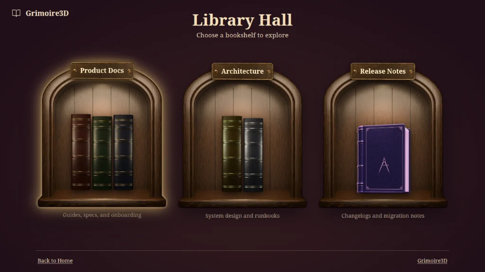

Multiple bookshelves (Library Hall)
Use shelves in grimoire.yml when you want distinct bookshelves—such as separate products, teams, or topic areas—rather than grouping books on one shared shelf with category.

When shelves is present, Grimoire3D generates a Library Hall directory at the site root (/) and builds each local bookshelf into its own isolated subdirectory (/<shelf-id>/). Omit shelves to keep the default single-bookshelf behavior unchanged.
Configure shelves in grimoire.yml
Place a single grimoire.yml in your project directory and list each bookshelf under shelves.
locale: en
title: Library Hall
description: Choose a bookshelf to explore
siteUrl: https://docs.example.com/
footer:
label: Back to Home
url: /
shelves:
- id: product-docs
title: Product Docs
description: Guides, specs, and onboarding
docsDir: ./docs/product
- id: architecture
title: Architecture
description: System design and runbooks
docsDir: ./docs/architecture
- id: external-notes
title: External Notes
description: Hosted on a separate domain
href: https://notes.example.com/
books:
- title: Release Notes
cover: plum
Each shelf entry accepts these fields:
id(required): lowercase letters, digits, and hyphens (^[a-z0-9][a-z0-9-]*$). Reserved names (assets,books,content,read,search) and duplicates are rejected at build time.title(required): displayed on the shelf's brass nameplate and used as the child library's site title.description(optional): short caption displayed below the shelf alcove.docsDir(optional): path to a local Markdown directory built into/<id>/.href(optional): destination link for an externally hosted bookshelf (HTTP/HTTPS URL or safe relative path). Every shelf must specifydocsDir,href, or both.books(optional): up to three explicit preview volumes (titleand optionalcover) for the alcove. When omitted for a localdocsDir, Grimoire3D automatically previews up to the first three books from that shelf.
Isolated output and navigation
Running npx grimoire3d build produces a self-contained root Library Hall and independent child bookshelves:
dist/
├── index.html # Library Hall page (inlined styles, preloaded alcove art)
├── shelves.json # Machine-readable directory of shelves
├── assets/ # Shared Library Hall assets
├── product-docs/
│ ├── index.html # Standalone bookshelf for Product Docs
│ ├── library.json
│ ├── books/
│ └── search/library.json # Isolated full-text index (Product Docs only)
└── architecture/
├── index.html # Standalone bookshelf for Architecture
└── search/library.json # Isolated full-text index (Architecture only)
Each generated child bookshelf automatically receives a footer link back to the hall (Back to <Hall Title> → ../). Full-text search indexes, book JSON files, and attachments stay strictly inside each shelf's directory and never bleed across shelves.
npx grimoire3d serve works with the same grimoire.yml, serving the Library Hall at / and every local shelf at /<id>/ with live reload.
Dynamic filtering with shelves.json
If your hosting layer or reverse proxy controls which shelves a visitor may see, intercept requests to /shelves.json (cache: "no-store") and return a filtered shelves array.
When /shelves.json matches the embedded build manifest, static pages keep their server-rendered DOM untouched so initial rendering stays fast. When /shelves.json returns a different list (including an empty array), the Library Hall automatically re-renders to show only the permitted shelves or a localized empty message.